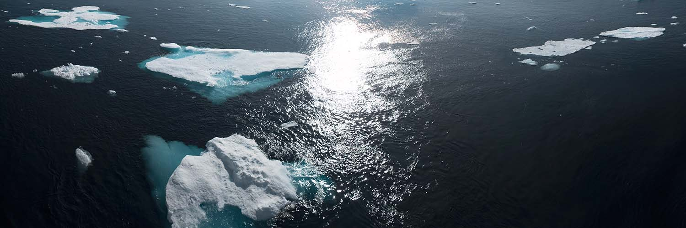
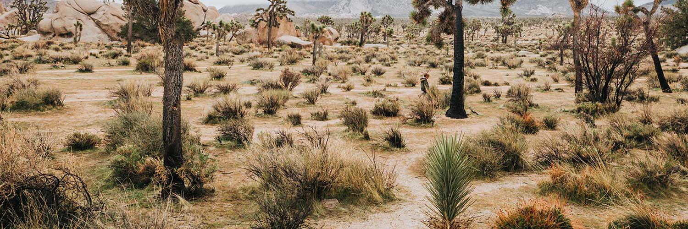
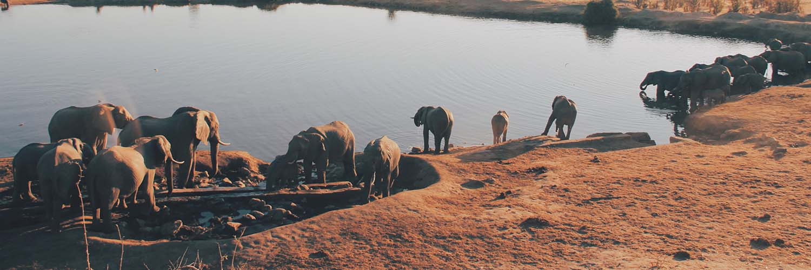

Cambiamento climatico: le 5 conseguenze principali.
Il tema dei cambiamenti climatici è sulla bocca di tutti: se ne parla in tv, a scuola, nei documentari. Scopriamo da cosa sono causati e quali sono le principali conseguenze.
Indice
- 1. Cos'è il cambiamento climatico?
- 2. Qual è la causa del mutamento climatico?
- 3. Le 5 conseguenze più evidenti.
- 3.1 Scioglimento dei ghiacci
- 3.2 Aumento del livello dei mari
- 3.3 Desertificazione
- 3.4 Scomparsa di molte specie animali
- 3.5 Aumento del rischio di malattie
- 4. Quanto tempo ci resta?
1. Cos’è il cambiamento climatico?
Con cambiamento climatico si intende qualsiasi mutamento relativo all’atmosfera terrestre legato in maniera diretta oppure no all’attività antropica.
Anche se ad oggi si stima che con tutta probabilità più del 95% delle cause legate a questo fenomeno siano da attribuire all’uomo, ci sono ancora gruppi di persone che si ostinano a negare l’evidenza. Siamo di fronte ai cosiddetti negazionisti.
La stragrande maggioranza di loro, per lo più grandi realtà di multinazionali, nega il problema perché crederci implica cercare soluzioni che avrebbero effetti negativi sui loro affari.
Un’altra parte invece si rifiuta di crederci perché percepiscono la faccenda come una finzione, una cosetta da film hollywoodiano, o perché semplicemente credono che la questione sia stata pompata dai media e che questi cambiamenti si verificano da tempo immemore, da quando si è formata la Terra.
È vero, queste variazioni climatiche esistono da sempre. Per fare qualche esempio basti pensare che a ridosso del 1750 il nostro pianeta fu interessato da una piccola era glaciale che durò circa un cinquantennio, oppure che nel periodo medievale si verificò un aumento delle temperature che permise ai Vichinghi di colonizzare la Groenlandia in seguito allo scioglimento parziale dei ghiacci.
Qual è allora il problema di fondo? Per cominciare è necessario dire che quei cambiamenti che hanno interessato il pianeta prima della Rivoluzione industriale sono stati dettati esclusivamente dalla natura.
L’altro aspetto da tenere in considerazione è la tempistica. Gli effetti dovuti ai cambiamenti di origine naturale interessano un arco temporale decisamente più ampio. Quelli scatenati dalle attività antropiche si sono verificati invece in un periodo di tempo più ristretto.
Com’è possibile che l’uomo sia in grado di influenzare in maniera così significativa il clima terrestre?
2. Qual è la causa del mutamento climatico?
Il fattore scatenante del cambiamento climatico è il riscaldamento globale. È innegabile che la causa di questo fenomeno sia effettivamente l’uomo: l’incremento delle attività industriali e le conseguenti emissioni di CO2 hanno come conseguenza l’aumento delle percentuali di gas serra nell’atmosfera.

L’effetto serra ha come scopo quello di trattenere parte dell’energia termica proveniente dal Sole. Tuttavia il progressivo aumento di anidride carbonica non fa altro che intensificare questo effetto causando un aumento significativo delle temperature.
Gli oceani e le foreste, i due polmoni della Terra, ci aiutano in gran parte con l’assorbimento di questo gas serra facendo per così dire il “lavoro sporco” a loro spese. Ma quando si sfrutta qualcosa e lo si porta al limite delle sue capacità, gli effetti possono essere devastanti.
Molte cose potrebbero esser fatte per ridurre in maniera significativa il riscaldamento globale, e molte persone si battono in favore di queste. Basti pensare a Greta Thunberg, l’attivista svedese diventata in poco tempo nota a tutti noi come protagonista di innumerevoli manifestazioni contro la crisi climatica. Con parole dure si è indirizzata ai leader mondiali affermando che la loro incapacità nel gestire la crisi climatica avrà pesanti ripercussioni sul futuro della sua generazione e di quelle a venire.
Lo stesso Leonardo di Caprio, premio Oscar nel 2016, nel film documentario Before the flood gira il mondo in lungo e in largo portando lo spettatore a scoprire in quali posti del mondo gli effetti del cambiamento climatico stanno già avendo conseguenze disastrose.
3. Le 5 conseguenze più evidenti
Le attività industriali contribuiscono alla produzione di diossido di carbonio che intensifica i livelli di gas serra nell’atmosfera, creando una catena di eventi che condizionano il clima del nostro pianeta.
3.1 Scioglimento dei ghiacci
La prima conseguenza del cambiamento climatico è proprio lo scioglimento dei ghiacci. Avrai sicuramente visto in giro per il web il famosissimo scatto dell’orso polare denutrito su una lastra di ghiaccio in mezzo al mare. Gli orsi polari sono l’emblema della fauna artica messa in pericolo dalla fusione dei ghiacci a causa dell’aumento delle temperature.
Gli orsi non sono le uniche vittime del fenomeno: la diminuzione della presenza di ghiaccio infatti, favorisce il transito navale in quel tratto nominato Passaggio a nord-ovest causando un aumento degli impatti tra navi e mammiferi acquatici come narvali e balene.
Si stima che entro il 2050, la temperatura nell’Artico subirà un aumento tra i 3° e i 5°. Paradossalmente l’aumento della temperatura che è la causa dello scioglimento ne è anche una conseguenza: il ghiaccio infatti per natura tende a riflettere la luce solare e rispedire parte del calore nell’atmosfera, se con il passare del tempo ci sarà meno ghiaccio le acque oceaniche tenderanno ad immagazzinare una percentuale maggiore di calore accelerando il processo di fusione.
Un altro fatto allarmante è che lo scioglimento del permafrost, ossia lo strato di ghiaccio perenne che ricopre zone come la Siberia o il nord Europa, potrebbe rilasciare nell’atmosfera grandi quantità di metano rimasto intrappolato sotto di esso per millenni, peggiorando di conseguenza le condizioni climatiche.
3.2 Aumento del livello dei mari

L’aumento del livello del mare è dovuto principalmente alla fusione del “land ice” vale a dire il ghiaccio che sta sulla terraferma, come quello che ricopre la Groenlandia, quello che sta sui ghiacciai montani o quello che riveste il continente antartico.
Parlando di numeri sappiamo che ogni anno la Groenlandia e l’Antartide perdono più di 400 gigatonnellate di ghiaccio che si riversa negli oceani. Secondo l’IPCC, organismo internazionale per la valutazione dei cambiamenti climatici, il livello dei mari dovrebbe salire di 1,1 metri. Tuttavia un team di ricercatori danesi considera queste previsioni troppo ottimistiche, affermando invece che si arriverà ad un innalzamento di circa 1,35 metri.
La nostra stessa penisola patirà le conseguenze di questo fenomeno. L’ENEA, ente pubblico di ricerca che opera nel settore dell’ambiente e delle nuove tecnologie, ha diffuso una mappa che evidenzia come entro il 2100 in seguito all’incremento dei livelli del mare, molte zone saranno soggette ad inondazioni. Tra le peggiori realtà, quella del porto di Napoli e del porto di Venezia, seguite da Cagliari, Palermo e Brindisi.
Ma un terzo delle coste italiane è già soggetto all’erosione, specialmente nelle zone in cui le onde del mare arrivano con più forza come nell’ovest della Sardegna e nel sud della Sicilia. Prendiamo l’esempio di Eraclea, considerata fino ad un paio di decenni fa come la spiaggia più bella della Sicilia. Nell’arco di vent’anni il mare ha sommerso più di 150 metri di spiaggia e parte del boschetto adiacente, protetto inizialmente da alte dune di sabbia che riuscivano ad attutire la forza delle onde.
Con l’aumento dei livelli del mare inoltre, quelle popolazioni che vivono in piccole isole, negli atolli o lungo le zone costiere si ritroveranno a non avere più una casa cercando rifugio nell’entroterra.
L’ONU stima che con il fenomeno delle migrazioni di massa, entro il 2050 si raggiungeranno circa 200 milioni di rifugiati ambientali. Le zone più a rischio sono rappresentate dalle metropoli asiatiche costruite vicino al mare come Shangai, Tokyo o Bangkok. Seguono poi le città dell’Africa che prosperano sul delta del fiume Nilo.
3.3 Desertificazione
Con il termine desertificazione si indica il progressivo deterioramento del suolo in zone aride o semi-aride del pianeta. I terreni non sono più coltivabili, diventano sterili e si verifica la scomparsa di alcuni tipi di piante, animali o altre forme di vita.
Se in un primo momento si è pensato che il fenomeno fosse legato esclusivamente a fattori di origine naturale come un inaridimento del clima, più recentemente è stato affermato che anche stavolta la colpa è da attribuire a cause di tipo antropico.
Una di queste è il pascolo eccessivo. L’aumento di bestiame, la creazione di confini nazionali sono stati due fattori che hanno contributo ad intensificare le attività di pascolo in zone circoscritte causando l’impossibilità del manto erboso di rigenerarsi.
Anche il disboscamento ha avuto un ruolo chiave nel processo di desertificazione a causa dell’incremento della richiesta di combustibile. Dal 1990 ad oggi si stima infatti che sono andati perduti circa 129 milioni di ettari di foreste. Fortunatamente però sono state emanate numerose leggi per la conservazione e monitoraggio di vaste aree forestali garantendo la salvaguardia della biodiversità presente.
Gli scienziati avvertono che il processo di desertificazione avanza anche in Italia. Un quinto del nostro territorio è già a rischio, in particolar modo la Sicilia, il Molise e la Puglia. La causa principale è la forte siccità durante i mesi estivi quando le precipitazioni si riducono drasticamente.
3.4 Scomparsa di molte specie animali
Gli effetti del cambiamento climatico interessano anche la fauna mondiale. Molte specie rischiano di scomparire nell’arco del prossimo secolo. La siccità ad esempio metterà in pericolo quelle specie animali che necessitano di grandi quantità d’acqua per poter sopravvivere, come ad esempio l’elefante africano che ha bisogno di circa 150-300 litri d’acqua al giorno.
Il numero di tartarughe marine e di altri tipi di rettili e anfibi calerà drasticamente a causa dell’aumento delle temperature perché è proprio la temperatura che influenza il sesso dei nascituri. Solitamente si registrano nascite di esemplari maschi quando le temperature non superano i 28°.
Anche le tigri del Sundarbans in India sono una specie in pericolo in quanto il 96% della loro area di riproduzione, una vasta foresta di mangrovie, rischia di essere sommersa a causa dell’aumento del livello del mare.
Alcune specie di piante o animali non riusciranno a stare al passo con i cambiamenti climatici per colpa dell’impossibilità o della lentezza nello spostarsi. Quelle invece che con tutta probabilità si sposteranno in zone più sicure dovranno vedersela con le specie già presenti, generando lotte per il territorio o per l’accaparrarsi il cibo.
Il rischio maggiore riguarda le balene, che al problema della pesca che miete vittime ogni anno, si aggiunge la diminuzione del plancton di cui si cibano proprio a causa dell’aumento della temperatura dell’acqua.
3.5 Aumento del rischio di malattie
L’inesorabile aumento delle temperature nel globo porta con sé un incremento del rischio di malattie trasmissibili, specialmente quelle di origine animale.
In particolare, le alte temperature favoriscono il ciclo riproduttivo di alcuni insetti come zecche e zanzare che sono vettori di molte infezioni. Si parla da qualche anno della malattia di Lyme, una patologia difficile da diagnosticare che presenta molti sintomi che tendono a cronicizzare. Il batterio di questo virus è trasmetto proprio dal morso di zecca.
La malaria poi potrebbe facilmente raggiungere i paesi che una volta presentavano climi un po’ più freddi ma che in futuro toccheranno i 25°, temperatura ideale per la diffusione del virus.
Il clima favorevole e la globalizzazione inoltre permettono a questi insetti di spostarsi più facilmente in alcune zone del globo dove prima era più difficile arrivare.
In Italia ad esempio è aumentato il rischio di contrarre malattie esotiche che prima erano circoscritte a determinate aree del pianeta come ad esempio il virus della Chikungunya trasmesso dalle zanzare.
Altri animali che fungono da vettori come i pipistrelli della frutta, tenderanno a spostarsi nei luoghi in cui sono presenti insediamenti umani alla ricerca cibo, favorendo così la trasmissione di virus.
4. Quanto tempo ci resta?
In seguito all’Accordo di Parigi del 2015, gli stati firmatari si sono impegnati per arginare il problema del riscaldamento globale. Già nel 2019 tuttavia, i dati hanno rilevato che si è raggiunto un altro picco nelle emissioni di CO2.
Gli esperti dell’IPCC non hanno dubbi: ci restano poco più di 10 anni per agire e per ridurre le emissioni di anidride carbonica. Ad ogni modo, Luca Mercalli, Presidente della Società Metereologica Italiana, afferma che la nave è ormai salpata e che non si può invertire la rotta. Quel lasso di tempo di 10 anni infatti, servirà solamente per impedire il verificarsi di uno scenario peggiore in quella che Sergio Mattarella definisce come la sfida chiave del nostro tempo
.